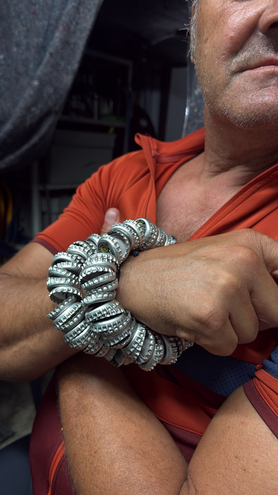
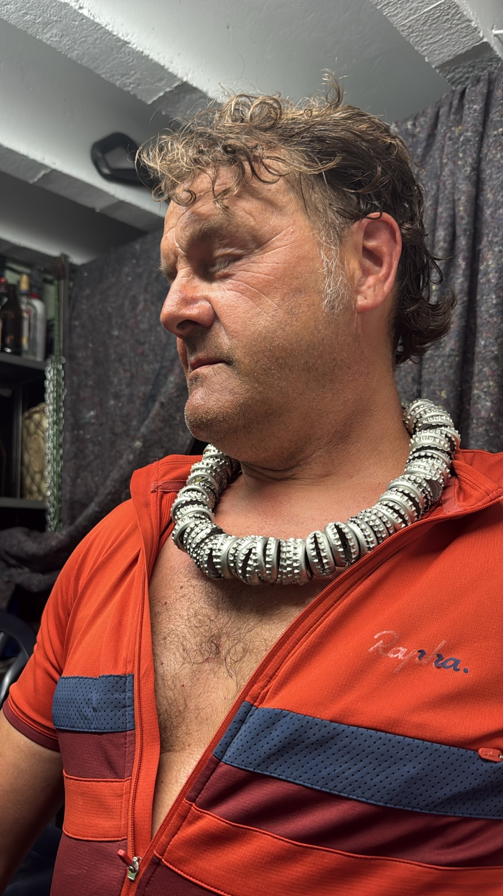
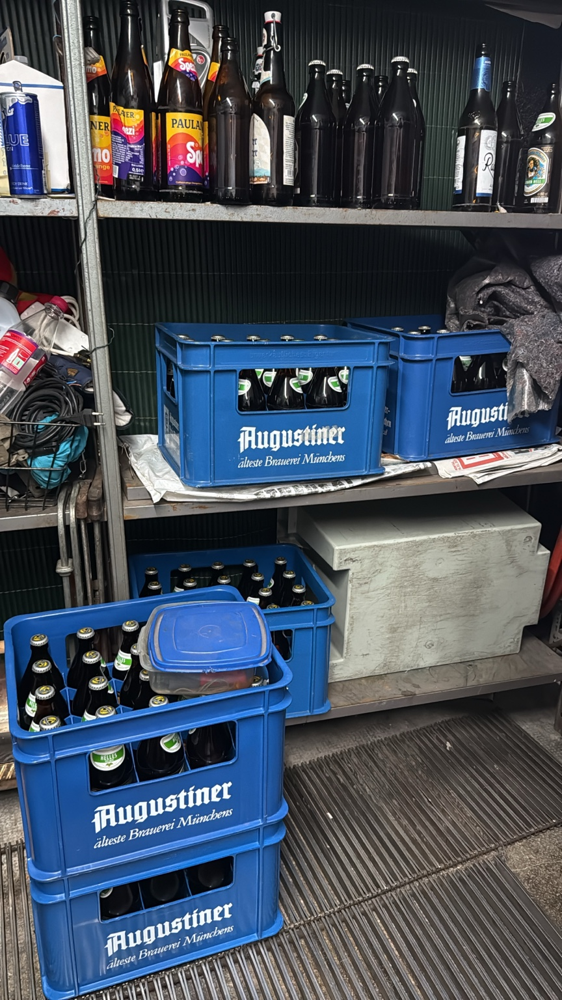
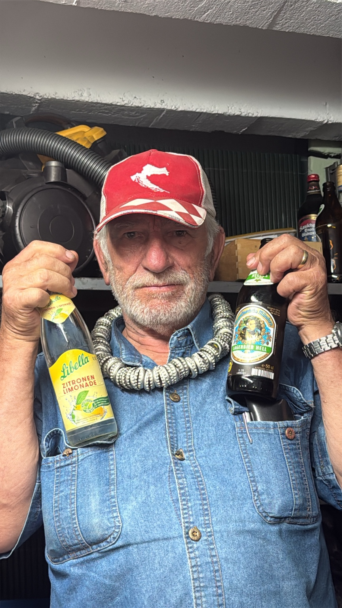
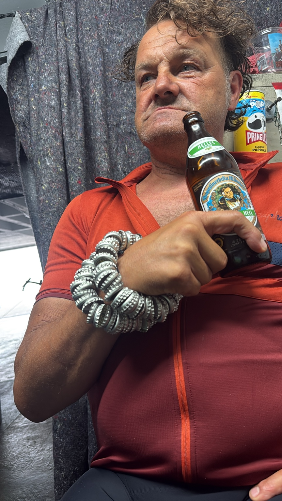

Der Armreif
Massiv, silbern, laut. Ein Upcycling-Statement für Handgelenke mit Haltung.
Neue Schmuckkollektion 2026
Handgefertigte Statement-Pieces aus Kronkorken: Halsketten, Armreifen und Kopfschmuck für Menschen, die nicht glänzen wollen wie alle anderen.
Kollektion entdecken
Signature Pieces

Massiv, silbern, laut. Ein Upcycling-Statement für Handgelenke mit Haltung.
Ein Halsstück zwischen Braukunst, Werkstatt und Laufsteg.

Für große Auftritte: Kopfschmuck mit Augenzwinkern und maximaler Präsenz.

Upcycling mit Humor
Jedes Teil beginnt dort, wo andere nur Pfand sehen: im Getränkekeller. Aus gesammelten Kronkorken entstehen markante Schmuckobjekte mit industriellem Look, lokaler Seele und einem Auge für Details.
„Nicht jeder Schmuck muss leise sein."


Limited Edition
Schreib uns für Sonderanfertigungen, Fotoshootings oder Ausstellungen.